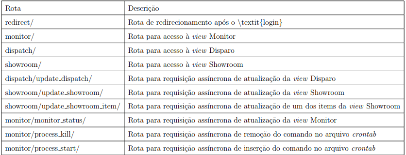
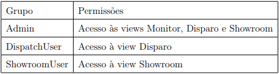
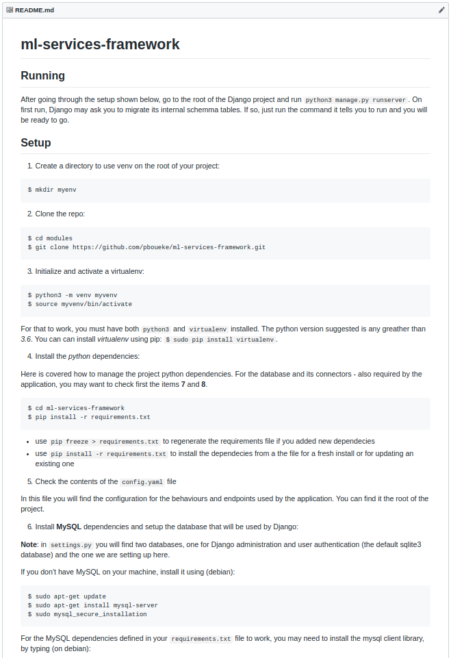

Framework para Serviços de Aprendizado de Máquina
Pedro Hollanda Boueke
Projeto de Graduaçãao apresentado ao Curso
de Engenharia de Computação e Informação
da Escola Politécnica, Universidade Federal
do Rio de Janeiro, como parte dos requisitos
necessários à obtenção do título de Engenheiro.
Orientador: Flávio Luis de Mello
Rio de Janeiro
Março de 2019
1
Tema
O trabalho apresenta uma proposta de plataforma para a gerência e
execução de modelos de Aprendizado de Máquina, da coleta dos dados
a serem processados à execução e entrega dos resultados.
2
Justificativa
Enquanto que novos modelos de Aprendizado de Máquina são propostos regularmente
na academia, pouca 6enfase é dada à implantação de tais modelos em ambientes
não acadêmicos. Dado esse cenário, nota-se que existe espaço e demanda para o
estudo e desenvolvimento de novas metodologias e plataformas que ambicionem soluçõoes para
as dificuldades envolvidas em trazer um modelo de Aprendizado de Máquina para
um ambiente não acadêmico.
3
Objetivos
-
Desenvolvimento de uma aplicação web que:
-
Permite o escalonamento da execução de modelos
-
Permite a visualização dos resultados e eventos do sistema
-
Permite a execução de modelos em tempo real
-
Se comunica com bases de dados externas para coleta e persistência de dados
-
É configurável a fim de atender ambientes diversos
-
Desenvolvimento de uma base de dados relacional para armazenamento de eventos da plataforma
-
Desenvolvimento de um programa para execução de modelos de aprendizado de máquina
4
Sistemas de Aprendizado de Máquina em Ambiente de Produção
O ressurgimento da área de Aprendizado de Máquina na academia não se viu acompanhado,
na mesma escala, da criação de novos sistemas para implantação prática dos novos modelos.
As principais soluções são a implementação própria de um sistema, similar ao trabalho exposto aqui,
e o uso de serviços gerenciados, como o Amazon Sagemaker e o Azure Machine Learning Studio.
5
Agendadores de Tarefas
Sistemas agendadores de tarefas, ou job shedulers, são ferramentas que permitem o agendamento
da execução de programas em intervalos de tempo predeterminados. Duas dessas ferramentas são o
slurm e o crontab.
O crontab, utilizado nesse trabalho, se destaca por ser extremamente simples, fazendo uso de
expressões CRON para o agendamento de tarefas.
6
Desenvolvimento com Django e AWS
O Django é um framework para desenvolvimento de aplicações web disponível para as linguagens
de programação Python 2 e 3. Sua estrutura é baseada no paradigma MTV e é particularmente
caracterizada por uma forte integração nativa a vários bancos de dados.
A Amazon Web Services, ou AWS, é a maior provedora de infraestrutura em nuvem do mundo. A empresa
disponibiliza, dentre muitos outros, serviços para websites, dispositivos móveis, redes, aluguel de servidores, etc.
8
Configuração
Toda a configuração da aplicação é realizada a partir de dois arquivos, o settings.py,
o arquivo de configuração padrão do Django, e o config.yaml, o arquivo de configuração
da plataforma.
No arquivo config.yaml, são configurados todos os parâmetros necessários para a conexão
e monitoramento de todos os serviços associados, bem como os modelos carregados na aplicação
e o comando a ser executado pelo CRON daemon.
9

View
Essa componente é um pacote da linguagem Python e contém as funçõoes
responsáveis por enviar o HTML a ser visualizado pelo usuário e responder todas
as chamadas assíncronas requisitadas pelas interfaces. Também é responsável por
controlar o acesso dos usuários baseado nos grupos aos quais pertencem.

10
Datalake
Essa componente é responsável por gerenciar a conexão com o datalake associado ao projeto.
Todas as chamadas e queries executadas no datalake são executadas por meio dessa componente.
16
Implantação
A implantação da plataforma passa pela obtenção, configuração e inicialização do ambiente.
Para a obtenção do ambiente, foi utilizado um servidor hospedado na AWS. O banco de dados da aplicação
foi hospedado na mesma máquina. A configuração e inicialização serão cobertas nos próximos slides.
17
Configuração do ambiente

Todos os passos da configuração do ambiente se encontram no arquivo README.md,
no diretório raiz do projeto
18
Inicialização da aplicação
Com o ambiente configurado, basta executar o comando abaixo para iniciar a aplicação localmente,
na porta de sua escolha:
$ python manage.py runserver 0.0.0.0:<porta>
19
Conclusão
Com todos os pontos objetivados alcançados, tem-se o sucesso da proposta e da implementação
da proposta.
20
Trabalhos Futuros
-
Expandir a aplicação com uma nova view encarregada de gerenciar as configurações
-
Expandir o número de modelos carregados na aplicação, permitindo vários modelos e cargas de trabalho
-
Expandir as interfaces da aplicação com uma interface programática na forma de uma web API para a execução de modelos sob demanda